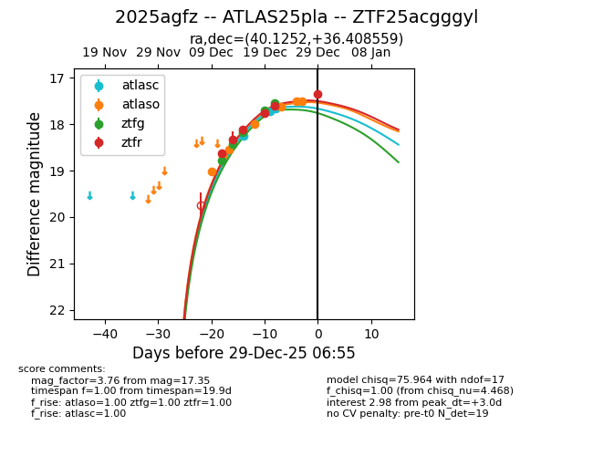
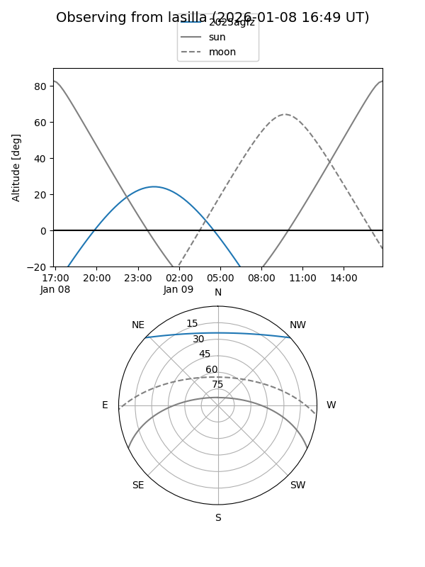
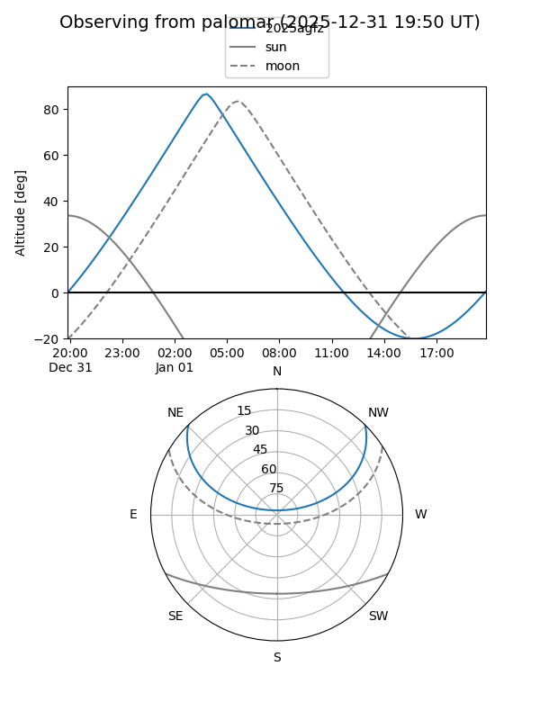
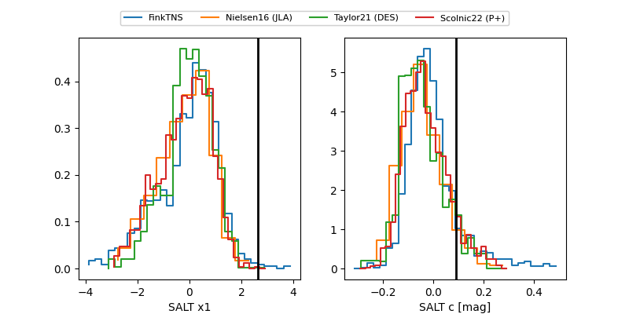

2025agfz
Target 2025agfz at 2026-01-09 03:46
Aliases and brokers:
FINK:
Lasair:
ALeRCE:
TNS:
YSE:
alt names
ZTF25acgggyl (ztf,fink_ztf)
2025agfz (tns,yse)
ATLAS25pla (atlas)
Coordinates:
equatorial (ra, dec) = 40.1252,+36.40856
equatorial (HMS+DMS) = 02:40:30.04,+36:24:30.81
galactic (l, b) = (146.2722,-21.47157)
Flags:
Photometry:
last atlasc=17.67, atlaso=17.34, ztfg=17.55, ztfr=17.28
3 atlasc, 10 atlaso, 5 ztfg, 7 ztfr detections
Lightcurve

Visibility


Additional plots
